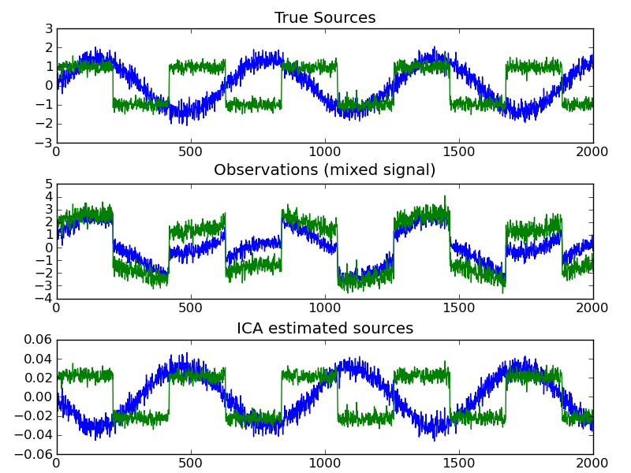

Blind source separation using FastICA¶
Independent component analysis (ICA) is used to estimate sources given noisy measurements. Imagine 2 instruments playing simultaneously and 2 microphones recording the mixed signals. ICA is used to recover the sources ie. what is played by each instrument.

Python source code: plot_ica_blind_source_separation.py
print __doc__
import numpy as np
import pylab as pl
from scikits.learn.decomposition import FastICA
###############################################################################
# Generate sample data
np.random.seed(0)
n_samples = 2000
time = np.linspace(0, 10, n_samples)
s1 = np.sin(2*time) # Signal 1 : sinusoidal signal
s2 = np.sign(np.sin(3*time)) # Signal 2 : square signal
S = np.c_[s1,s2].T
S += 0.2*np.random.normal(size=S.shape) # Add noise
S /= S.std(axis=1)[:,np.newaxis] # Standardize data
# Mix data
A = [[1, 1], [0.5, 2]] # Mixing matrix
X = np.dot(A, S) # Generate observations
# Compute ICA
ica = FastICA()
S_ = ica.fit(X).transform(X) # Get the estimated sources
A_ = ica.get_mixing_matrix() # Get estimated mixing matrix
assert np.allclose(X, np.dot(A_, S_))
###############################################################################
# Plot results
pl.figure()
pl.subplot(3, 1, 1)
pl.plot(S.T)
pl.title('True Sources')
pl.subplot(3, 1, 2)
pl.plot(X.T)
pl.title('Observations (mixed signal)')
pl.subplot(3, 1, 3)
pl.plot(S_.T)
pl.title('ICA estimated sources')
pl.subplots_adjust(0.09, 0.04, 0.94, 0.94, 0.26, 0.36)
pl.show()